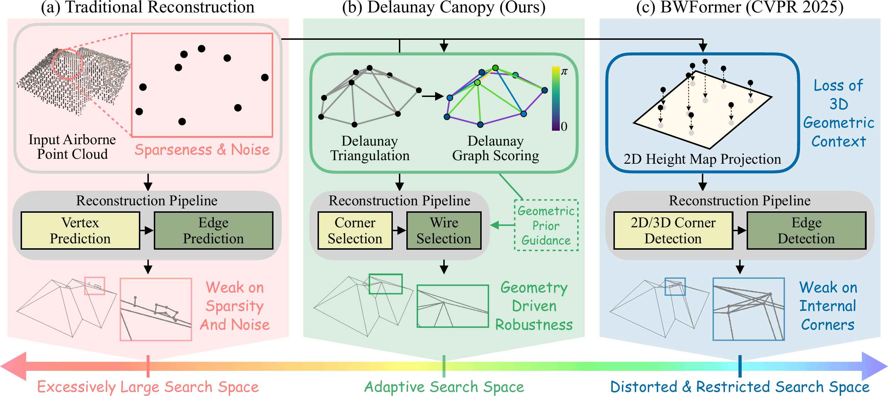
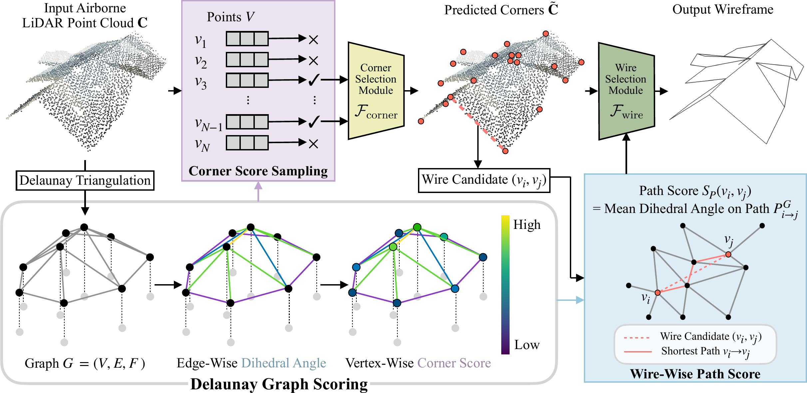
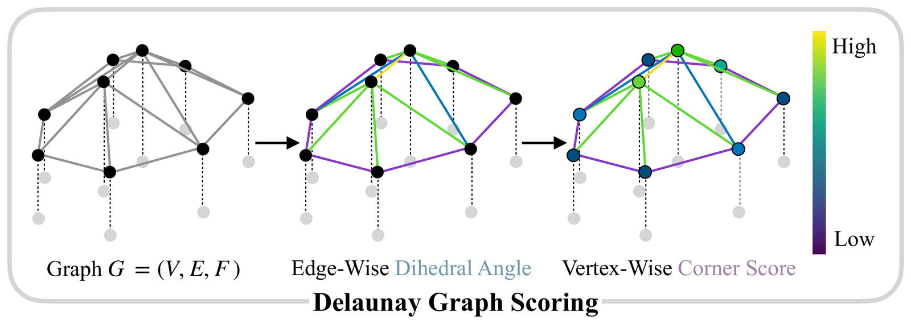
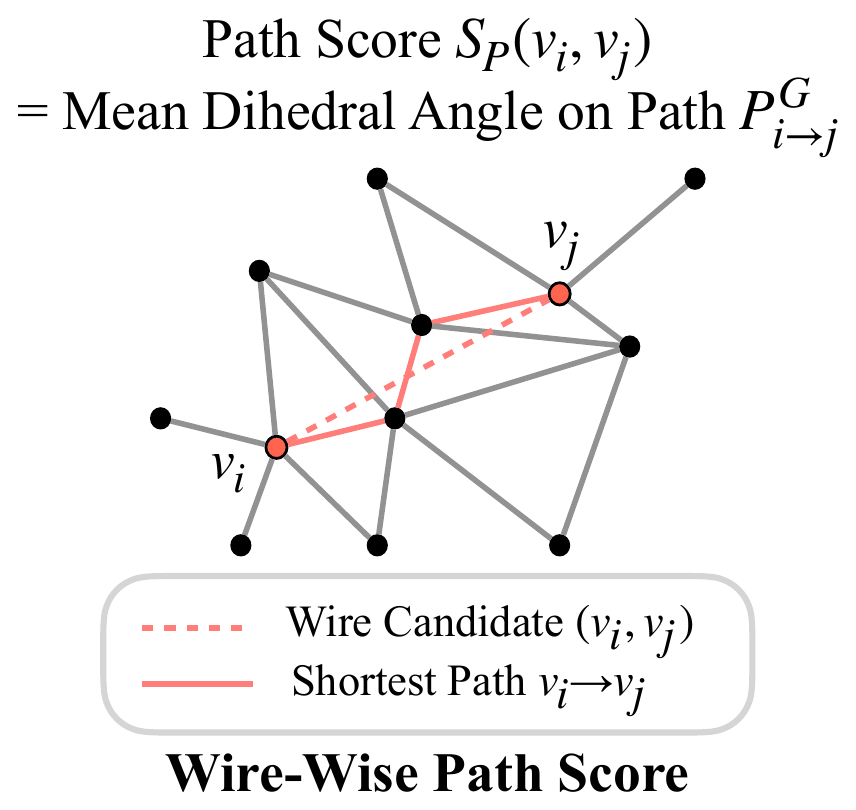

Building Wireframe Reconstruction from Airborne LiDAR Point Clouds via Delaunay Graph
Delaunay Canopy scores a Delaunay graph with geometric priors to reconstruct building wireframes precisely, even in sparse, noisy, and internal-corner regions.

Dihedral angles over a Delaunay graph turn raw geometry into region-wise curvature signatures.
Corner score sampling and prior-based query scaling focus prediction on probable corners and wires.
Best corner and wire accuracy on the Building3D Tallinn city and entry-level datasets.

We apply Delaunay triangulation to the airborne LiDAR point cloud to approximate its underlying surface, producing a graph \(G=(V,E,F)\). Scoring that graph turns raw geometry into curvature signatures, first on its edges and then on its vertices.

Edge-wise dihedral angle. For an edge \(e\) with adjacent faces of normals \(\mathbf{n}_1\) and \(\mathbf{n}_2\), the dihedral angle measures how sharply the surface bends across that edge.
Vertex-wise corner score. At the most granular level of the graph, aggregating the dihedral angles of all incident edges \(E(v)\) yields a corner score, where a high value flags significant local curvature.
Each panel runs from the raw input point cloud down to 500 points and then to 150 points, with the ground truth wireframe kept faintly visible throughout. While farthest point sampling spreads its budget evenly over the surface, corner score sampling retains points located in areas of pronounced curvature (roof corners and edges), making them highly probable corner candidates.

For a wire candidate \(w_{ij}\) connecting vertices \(v_i\) and \(v_j\), we first find the shortest path \(P^{G}_{i \to j}\) between these two vertices on the Delaunay graph. The edges along that path share the same local region as the wire candidate, so averaging their dihedral angles gives a path score that represents the wire curvature.
Through prior-based query scaling, each wire query is modulated by \(s^{w}=\sigma(S^{w}_{P})\), damping low-score wires and emphasizing high-confidence ones. The model's attention is focused on geometrically plausible structures, leading to stable and accurate wire predictions.
Drag the divider to wipe between the input point cloud and the reconstructed wireframe. Drag anywhere else to orbit, scroll to zoom. Each building turns on its own. Auto-rotation pauses the moment you grab a view.
Against the strongest baseline BWFormer, on challenging cases with complicated roof structures. Fully leveraging 3D geometric context, a capability often absent when only 2D information is employed, facilitates superior detection of interior corners in addition to those on the periphery. Each row is one building, with the input on the left and the two reconstructions sharing the right cell. Drag the divider there to swap between them.
Our framework exhibits strong robustness across challenging real-world scenarios, successfully handling cluttered, occluded, and highly complex geometrical cases. Drag a divider to wipe between the input and the reconstruction, drag anywhere else to orbit.
@inproceedings{kim2026delaunay,
title = {Delaunay Canopy: Building Wireframe Reconstruction from Airborne LiDAR Point Clouds via Delaunay Graph},
author = {Kim, Donghyun and Kim, Chanyoung and Kwon, Youngjoong and Hwang, Seong Jae},
booktitle = {Proceedings of the European Conference on Computer Vision (ECCV)},
year = {2026}
}